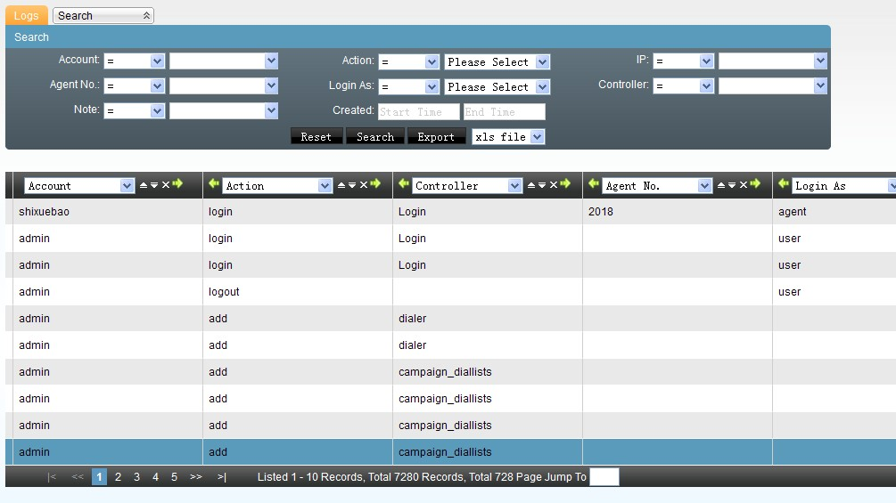
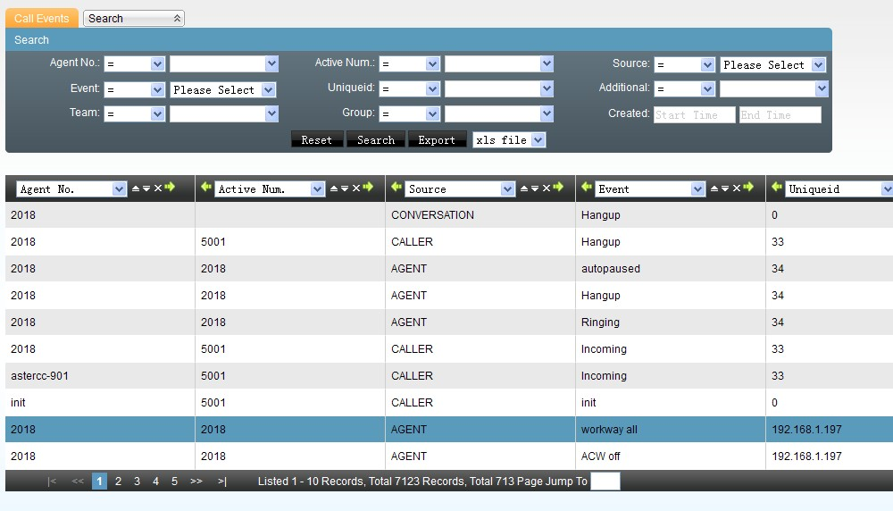
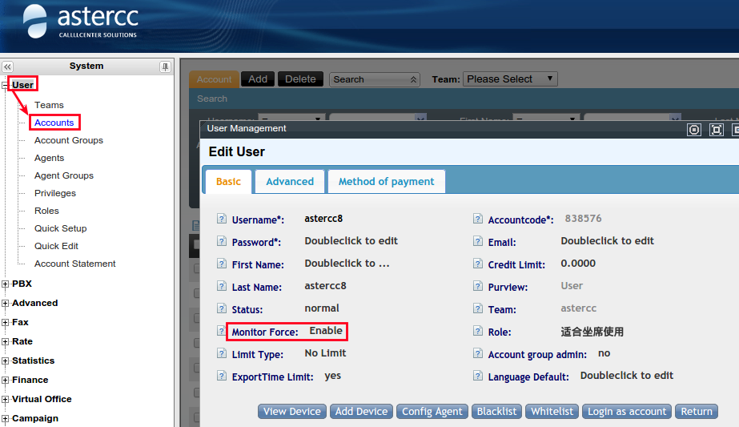
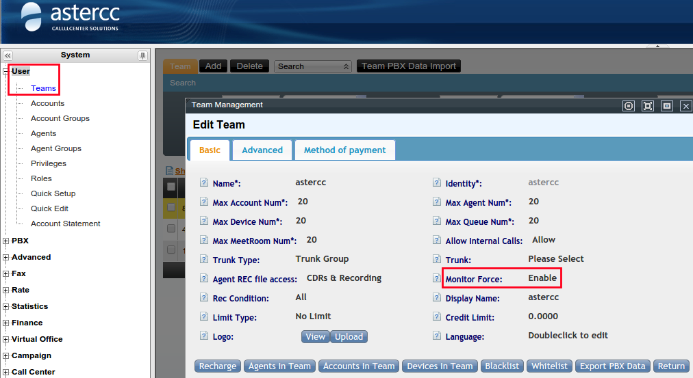
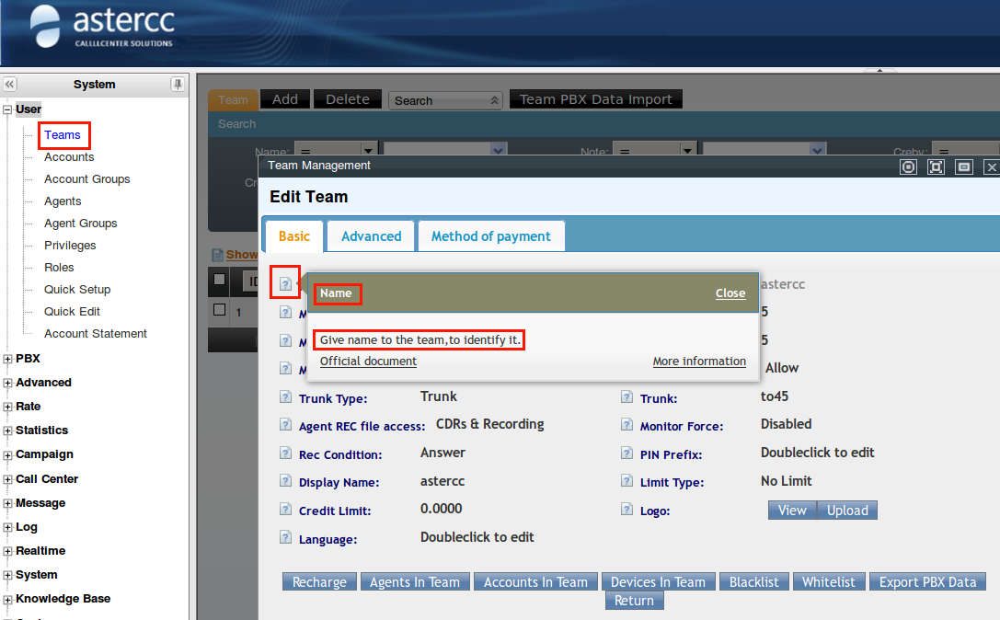
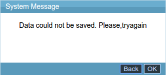

FAQ: Base de datos y sistema¶
Puede estar desactualizado
Varias respuestas documentan rutas, versiones de paquete y comandos de una instalación de referencia antigua (CentOS 6, astercc10 como nombre de base de datos, astercc2.6-rc1, nginx-1.2.6). Verifica las rutas y versiones reales de tu instalación antes de ejecutar cualquier comando.
Base de datos (MySQL)¶
¿Qué tablas incluye la base de datos de AsterCC?¶
La base de datos astercc10 contiene varios cientos de tablas con el prefijo cc10_. Algunas de las más relevantes para diagnóstico:
cc10_pbxcdrs— historial de registros de llamada (CDR) del PBX.cc10_curpbxcdrs— llamadas en curso / recientes (tabla "en tiempo real").cc10_1_campaigncdrs,cc10_2_campaigncdrs, ... — CDR de cada campaña de marcador (el número es el ID de la campaña).cc10_cache_campaign_cdrs— caché intermedia de CDR de campañas, usada mientras la llamada no ha cerrado.cc10_accounts,cc10_agents,cc10_teams,cc10_extensions,cc10_trunks,cc10_ivrs,cc10_queues— configuración de cuentas, agentes, equipos, extensiones, troncales, IVR y colas.cc10_settings— parámetros generales del sistema (por ejemploip_limitpara la restricción de IP).cc10_knowledges,cc10_workorders— base de conocimiento y órdenes de trabajo (work orders).
¿Cómo sé si una tabla de MySQL está dañada y cómo la reparo?¶
Señales típicas: todos los agentes se desconectan de golpe, las consultas de llamadas no devuelven resultados, el proceso datamover se cae, o el CTI Core reporta alarmas. Para diagnosticar:
- Revisa el log de errores de MySQL:
tail -n 50 /var/log/mysqld.log - Identifica el nombre de la tabla dañada en el log.
- Repárala con
mysqlcheck(funciona incluso con la tabla en uso):Alternativa manual dentro de la consola de MySQL:mysqlcheck -r astercc10 --auto-repair -u<usuario> -p<contraseña>repair table <nombre_tabla>; - Sigue vigilando el log por si aparecen nuevos errores de corrupción.
MySQL no arranca y el log muestra InnoDB: Error: tried to read XXXXXX bytes at offset...¶
Este error suele resolverse moviendo los archivos de InnoDB fuera del directorio de datos y dejando que MySQL los regenere:
mv /var/lib/mysql/ib* /root
service mysql start
El log de MySQL indica que una tabla de memoria (MEMORY) está llena¶
Primero verifica si el proceso que descarga las tablas de memoria a disco sigue vivo:
ps aux | grep astcc_datamover
Si el proceso astcc_datamover -d no aparece, es la causa típica de que la tabla de memoria se llene. Pasos:
- Revisa el log de MySQL — además de la alarma de tabla llena puede haber alarmas de tablas corruptas; repáralas todas.
- Reinicia el proceso
datamovery confirma que permanece corriendo hasta que termine de mover los datos de la tabla en memoria:/opt/asterisk/scripts/astercc/astcc_datamover -d
¿Cómo cambio la dirección/host de la base de datos que usa AsterCC?¶
Hay que editar dos archivos:
/etc/astercc.conf — las etiquetas [database] y [statistics] definen la conexión que usan los procesos backend:
vi /etc/astercc.conf
| Campo | Significado |
|---|---|
status |
Si esta configuración está activa |
dbtype |
Tipo de base de datos |
dbhost |
Dirección del servidor de base de datos |
dbname |
Nombre de la base de datos |
dbport |
Puerto de conexión |
username / password |
Credenciales de acceso |
prefix |
Prefijo de las tablas |
shortringsec |
Duración mínima de llamada para contar en las estadísticas |
/var/www/html/asterCC/app/config/database.php — la clase DATABASE_CONFIG, bloque default, define la conexión que usa la interfaz web:
vi /var/www/html/asterCC/app/config/database.php
| Campo | Significado |
|---|---|
driver |
Tipo de base de datos |
persistent |
Si se mantiene la conexión persistente |
host |
Dirección del servidor |
login / password |
Credenciales |
database |
Nombre de la base de datos |
prefix |
Prefijo de tablas |
encoding |
Codificación de caracteres |
¿Cómo traslado el directorio de almacenamiento de MySQL a otro disco?¶
Con el sistema sin llamadas activas:
- Detén MySQL:
service mysqld stop(omysqladmin shutdown -uroot -p<contraseña>). - Monta el nuevo almacenamiento (por ejemplo en
/mnt) y copia los datos:cp -Rp /var/lib/mysql /mnt - Renombra el directorio original como respaldo:
mv /var/lib/mysql /var/lib/mysql.bak - Crea el enlace simbólico hacia la nueva ubicación:
ln -s /mnt/mysql /var/lib - Verifica el enlace (
ll /var/lib) y arranca MySQL de nuevo:service mysqld start. - Una vez confirmado que todo funciona, elimina
mysql.bakpara liberar espacio.
Replicación maestro-esclavo de MySQL¶
Cubierto en Diagnóstico de red y VoIP — Replicación maestro-esclavo de MySQL.
Datos huérfanos en cc10_curpbxcdrs y registros de llamada duplicados¶
Datos huérfanos: cuando quedan registros históricos sin explicación en cc10_curpbxcdrs producto de una falla desconocida durante la llamada, no hay forma de repararlos — solo se puede revisar el log del sistema de AsterCC para identificar qué falla los originó.
Registros de llamada duplicados: la causa habitual es tener el cron astcc_historydata -d corriendo dos veces. Verifica con:
crontab -l
y elimina la entrada duplicada de * * * * * /opt/asterisk/scripts/astercc/astcc_historydata -d.
Logs y monitoreo¶
¿Qué logs genera AsterCC y dónde están?¶
| Componente | Ruta | Notas |
|---|---|---|
| Sistema Linux (general) | /var/log/messages |
Todo lo que no tenga destino específico |
| HTTP (nginx) | Error: /var/log/nginx/error.log; acceso: /var/www/html/asterCC/http-log/access.log |
La ruta se puede redefinir en /usr/local/nginx/conf/nginx.conf |
| Asterisk | /var/log/asterisk/full, /var/log/asterisk/messages |
Requiere habilitar niveles de log (ver abajo) |
| AsterCC (asterccd) | /opt/asterisk/scripts/astercc/*.log |
Un archivo por módulo, por ejemplo astcc_dialer.log para el marcador predictivo |
| Eventos de llamada de agente | /tmp/astcceventslog/eventsfile_AAAAMMDD.log |
Se conservan por defecto los últimos 5 días; nunca borrar el log del día en curso |
Para habilitar el log de Asterisk, quita el ; de las líneas messages => y full => en /etc/asterisk/logger.conf y recarga:
asterisk -rx "logger reload"
Para habilitar el log de AsterCC, en /etc/astercc.conf bajo [system] pon debug en un entero mayor a 0 (por ejemplo debug=2; debug=0 lo desactiva) y reinicia el servicio:
service asterccd restart
Algunas instalaciones también agregan internal_debug = 1 bajo [system] para depuración interna adicional.
¿Cómo administra AsterCC la rotación de logs?¶
logrotate rota, comprime y elimina logs antiguos según tamaño/antigüedad, normalmente vía cron. Su configuración global vive en /etc/logrotate.conf (no suele modificarse) y las reglas por servicio en /etc/logrotate.d/. Desde astercc2.6-rc1 el sistema incluye reglas de logrotate propias en esa carpeta.
Directivas más usadas en las reglas de AsterCC:
| Directiva | Efecto |
|---|---|
missingok |
Ignora errores como "archivo no encontrado" |
notifempty |
No rota si el archivo está vacío |
daily / weekly / monthly |
Periodicidad de la rotación |
rotate N |
Cuántas copias históricas conservar |
compress / nocompress |
Comprime (gzip) los archivos ya rotados |
delaycompress |
Comprime hasta la siguiente rotación (útil junto con compress) |
create modo owner group |
Permisos/propietario del nuevo archivo de log |
sharedscripts |
Ejecuta el script postrotate una sola vez para todos los archivos que coincidan |
Ejemplo real usado para PHP-FPM:
/var/log/php-fpm/*log {
missingok
notifempty
sharedscripts
delaycompress
postrotate
/bin/kill -SIGUSR1 `cat /var/run/php-fpm/php-fpm.pid 2>/dev/null` 2>/dev/null || true
endscript
}
Y para el log de MySQL:
/var/log/mysqld.log {
create 640 mysql mysql
notifempty
daily
rotate 3
missingok
compress
postrotate
if test -x /usr/bin/mysqladmin && /usr/bin/mysqladmin ping &>/dev/null
then
/usr/bin/mysqladmin flush-logs
fi
endscript
}
¿Cómo reviso los logs del sistema para diagnosticar un problema?¶
Además de los archivos de log en disco, la interfaz web tiene sus propias pantallas de consulta: Logs (acciones de los usuarios: login, altas, bajas, por cuenta/acción/controlador) y Eventos de llamada (eventos de canal por agente: timbrado, contestada, colgada, pausa, con su uniqueid).


Con el log de Asterisk habilitado (ver arriba), revisa /var/log/asterisk/full para eventos de canal, SIP y aplicaciones de dialplan. Para el log de AsterCC, edita /etc/astercc.conf — sube debug a un valor mayor (por ejemplo debug=11) y agrega internal_debug = 1 bajo [system]:
[system]
debug = 11
internal_debug = 1
Reinicia el servicio para aplicar:
service asterccd restart
Warning
Reiniciar asterccd interrumpe el servicio; hazlo solo cuando no haya llamadas activas.
Los logs de AsterCC con este nivel de detalle se escriben en /var/log/asterisk/full.
El proceso realtime se cae repetidamente¶
Ejecuta el binario manualmente para ver el error exacto:
/opt/asterisk/scripts/astercc/astcc_realtime
Con alta concurrencia es normal que el socket AMI se desconecte momentáneamente; realtime se reinicia solo y en general no afecta el servicio.
Aparece "chown: invalid user" al reiniciar asterccd¶
Indica que el usuario referenciado en la configuración no existe o no pertenece al grupo esperado. Verifica y corrige:
groups <usuario>
useradd <usuario> -g <grupo>
service asterccd restart
Limpiar datos antiguos de las tablas de información en tiempo real¶
Las pantallas de "Información en tiempo real del sistema" (por ejemplo el monitor de llamadas) leen de tablas como cc10_curpbxcdrs. Para depurar datos antiguos, elige un punto de corte de fecha y ejecuta un DELETE directo en MySQL:
delete from cc10_curpbxcdrs where calldate < 'AAAA-MM-DD';
El mismo patrón aplica a otras tablas de "en curso" (cc10_curqueuecallers, etc.), sustituyendo el nombre de tabla y la columna de fecha correspondiente.
¿Cómo hago limpieza de disco en un servidor AsterCC?¶
Usa df para ver espacio disponible por partición y du -sh <directorio> para tamaño de una carpeta. Puntos de limpieza más comunes:
- Log del sistema AsterCC: pon
debug=0en/etc/astercc.confbajo[system]y reiniciaasterccd(solo sin llamadas activas) — sin esto seguirá escribiendo. - Logs de scripts:
/opt/asterisk/scripts/astercc/*.logy*.gzse pueden borrar directamente. - Archivos del sistema web:
data/ystatistics/bajo/var/www/html/asterCC/suelen crecer mucho (grabaciones descargadas, datos de estadísticas); se recomienda moverlos a un disco con más espacio y enlazarlos de vuelta conln -s. - Grabaciones PBX:
/var/spool/asterisk/monitor— conserva al menos los últimos 5 días; el resto se puede migrar a otro disco y enlazar de vuelta. - Eventos de llamada:
/tmp/astcceventslog/— se pueden borrar los.logde más de 5 días una vez confirmado que los registros de llamada están correctos. - Asterisk:
/var/log/asterisk/fullymessagesse vacían sin detener el servicio conecho > full/echo > messages. Para deshabilitar el log, comenta las líneas correspondientes en/etc/asterisk/logger.confy ejecutaasterisk -rx "logger reload". - MySQL: el log de errores se define en
/etc/my.cnfbajo[mysqld_safe]conlog-error=/var/log/mysqld.log; puede desactivarse y su archivo eliminarse (reiniciarmysqldsin llamadas activas para que el cambio tome efecto). - HTTP:
/var/www/html/asterCC/http-log/access.logse puede vaciar conecho > /var/www/html/asterCC/http-log/access.log. - PHP: logs en
/var/log/php-fpm/(error.log,www-error.log). - Otros servicios: en
/var/log/los archivos con fecha en el nombre (maillog,cron,secure,yum, etc.) se eliminan conrm; los que no tienen fecha se vacían conecho >.
Almacenamiento y grabaciones¶
¿Cuánto espacio ocupan las grabaciones de llamadas?¶
AsterCC graba en dos formatos: WAV (~240 KB por minuto) y MP3 (~180 KB por minuto).
¿Cómo cambio la ubicación de almacenamiento de las grabaciones?¶
Con el sistema sin llamadas activas:
- Monta el nuevo almacenamiento (por ejemplo en
/mnt). - Copia la carpeta de grabaciones al nuevo destino:
cp -Rp /var/spool/asterisk/monitor /mnt/ - Renombra la carpeta original como respaldo:
mv /var/spool/asterisk/monitor /var/spool/asterisk/monitor.bak - Crea el enlace simbólico de vuelta a la ruta original:
ln -s /mnt/monitor /var/spool/asterisk/monitor - Verifica el enlace con
ll /var/spool/asterisk/y prueba reproducir/descargar una grabación desde PBX → Registro de llamadas en la interfaz. - Si todo funciona, elimina el respaldo:
rm -rf /var/spool/asterisk/monitor.bak.
Para empaquetar y migrar las grabaciones de un mes específico (ejemplo febrero de 2015) a otro servidor, dos métodos:
Método 1 — comprimir todo el mes de todos los equipos:
tar zcvf 201502.tar.gz /var/spool/asterisk/monitor/*/2015/02/
scp 201502.tar.gz root@192.168.1.177:/root/
En el destino: tar zxf 201502.tar.gz
Método 2 — listar archivos primero y empaquetar solo esos:
find /var/spool/asterisk/monitor/*/2015/02 -name "*.wav" -print > list
tar -T list -czvf 201502.tar.gz
Luego mover el .tar.gz al servidor destino y descomprimir con tar zxf 201502.tar.gz.
¿Qué controla si una llamada se grava o no?¶
La grabación se controla en cuatro niveles:
| Nivel | Comportamiento |
|---|---|
| Llamadas de agente | Siempre se grava, no requiere configuración |
| Extensión (dispositivo) | Se puede habilitar/deshabilitar la grabación de esa extensión específica |
| Cuenta de usuario | Fuerza la grabación de todos los dispositivos de esa cuenta |
| Equipo | Fuerza la grabación de todas las extensiones del equipo |


Falta lame y no se pueden convertir las grabaciones a MP3¶
Sin lame instalado, el sistema no puede convertir las grabaciones a MP3 y por lo tanto no se pueden reproducir en línea.
En Ubuntu, CentOS 7 y entornos similares, compilar e instalar desde fuente:
wget http://internode.dl.sourceforge.net/project/lame/lame/3.99/lame-3.99.5.tar.gz
tar zxf lame-3.99.5.tar.gz
cd lame-3.99.5
./configure
make && make install
En CPUs de varios núcleos se puede acelerar la compilación con make -j2 (o el número de núcleos disponibles).
En CentOS 6.7 (entorno de referencia de AsterCC):
yum install lame.x86_64
o, para instalación local vía RPM:
rpm -Uvh ftp://rpmfind.net/linux/dag/redhat/el6/en/x86_64/dag/RPMS/lame-3.99.5-1.el6.rf.x86_64.rpm
Al intentar escuchar una grabación aparece 404 File Not Found¶
Pasos de diagnóstico:
- Verifica que el archivo exista combinando la ruta base de grabaciones con la ruta de grabación indicada en el registro de llamadas del PBX.
- Revisa que todos los niveles de la ruta tengan permisos de usuario/grupo
asterisk. - Confirma que la dependencia
soxesté instalada:Si falta, instálala con:rpm -qa | grep soxyum install sox
Hay datos del cliente en control de calidad pero no se puede escuchar la grabación¶
Ocurre cuando el registro de llamadas del PBX (cc10_pbxcdrs) existe pero el registro correspondiente en la tabla de la campaña de marketing (por ejemplo cc10_1_campaigncdrs para la campaña con ID 1) no se creó, porque el sistema no recibió la señal de colgado del agente y la fila en cc10_cache_campaign_cdrs quedó sin hora de fin.
Para reparar:
- En
cc10_pbxcdrs, busca por el identificador único de llamada (sessionid) los valores correctos deendtime,durationybillsec. - En
cc10_cache_campaign_cdrs, localiza la fila pordiallogid— si tiene esos tres campos en0000-00-00 00:00:00,0,0, complétalos con los valores obtenidos en el paso 1. - Inserta el registro reparado en la tabla de CDR de la campaña correspondiente:
insert into cc10_1_campaigncdrs select * from cc10_cache_campaign_cdrs where diallogid="xxxxxxxxxxxxxx";
Warning
Puede producirse un error de clave primaria duplicada si el id de la fila de cc10_cache_campaign_cdrs ya existe en cc10_1_campaigncdrs.
Redes y permisos¶
¿Cómo monto un recurso de red vía NFS entre dos hosts CentOS 6.x?¶
Escenario: un servidor (192.168.1.76) comparte una carpeta; un cliente (192.168.1.198) la monta localmente.
- Instala el soporte NFS en ambos hosts:
yum install nfs-utils - Configura el arranque automático de los servicios necesarios:
chkconfig rpcbind on chkconfig nfs on service rpcbind start service nfs start - En el servidor, exporta el directorio compartido editando
/etc/exports:vi /etc/exportsNotas de las opciones:/root/my 192.168.1.198(insecure,rw,async,no_root_squash) rw: lectura y escritura.sync/async:syncescribe a disco de inmediato;asyncalmacena primero en memoria (más rápido, menos seguro ante caídas).no_root_squash: el usuario root del cliente conserva permisos de root sobre el recurso.insecure: permite acceso desde puertos no privilegiados del cliente (opcional).- Puede restringirse a un rango con
192.168.1.*(...)en vez de una IP única.
Aplica los cambios sin reiniciar el servicio:
exportfs -rv
showmount -e 192.168.1.76
rpcbind, mountd, statd, lockd, rquotad). Primero fija puertos fijos para esos servicios en /etc/sysconfig/nfs:
RQUOTAD_PORT=10001
LOCKD_TCPPORT=10002
LOCKD_UDPPORT=10002
MOUNTD_PORT=10003
STATD_PORT=10004
service nfslock restart
service nfs restart
rpcbind):
iptables -I INPUT -p tcp --dport 111 -j ACCEPT
iptables -I INPUT -p udp --dport 111 -j ACCEPT
iptables -I INPUT -p tcp --dport 2049 -j ACCEPT
iptables -I INPUT -p udp --dport 2049 -j ACCEPT
iptables -I INPUT -p tcp --dport 10001:10004 -j ACCEPT
iptables -I INPUT -p udp --dport 10001:10004 -j ACCEPT
service iptables save
service iptables restart
mount -t nfs -o rw 192.168.1.76:/root/my /mnt
df -hT. Para desmontar: umount 192.168.1.76:/root/my.
8. Para que el montaje persista tras un reinicio, agrega la misma línea de mount a /etc/rc.local:
mount -t nfs -o rw 192.168.1.76:/root/my /mnt
Para montar grabaciones u otros recursos vía Samba/CIFS en lugar de NFS, ver Diagnóstico de red y VoIP — Compartir grabaciones entre dos servidores con Samba — ya está documentado ahí, no se repite aquí.
¿Cómo monto grabaciones de otro servidor AsterCC vía Samba?¶
Cubierto en Diagnóstico de red y VoIP — Compartir grabaciones entre dos servidores con Samba.
¿Cómo se monta un disco automáticamente al arrancar?¶
El sistema lee /etc/fstab al inicio y monta los discos según lo indicado ahí. El archivo tiene seis columnas:
<file system> <dir> <type> <options> <dump> <pass>
/dev/sdb1 /mnt ext3 defaults 0 0
| Columna | Significado |
|---|---|
| 1 — dispositivo | Nombre/UUID/etiqueta del dispositivo a montar (usa mount sin argumentos para consultar nombres actuales) |
| 2 — punto de montaje | Directorio donde se monta (ej. /mnt, /media) |
| 3 — tipo de sistema de archivos | ext3, ext4, etc. |
| 4 — opciones | auto (monta automáticamente, valor por defecto), noauto (no monta al arrancar), defaults (rw,suid,dev,exec,auto,nouser,async), nouser/user (quién puede montarlo), ro/rw (solo lectura o lectura-escritura) |
| 5 — dump | 0 = ignorar, 1 = respaldar con dump (normalmente 0) |
| 6 — pass (chequeo de arranque) | 0 = no verificar; la partición raíz debe ser 1; el resto empieza en 2 — número menor se verifica primero, iguales se verifican en paralelo (normalmente 0) |
Aparece "chown: invalid user" al ejecutar operaciones de escritura/creación en PHP¶
Ver la pregunta de la sección de Logs y monitoreo sobre chown: invalid user. Un caso relacionado es que las operaciones de escritura o creación desde la interfaz web fallen (por ejemplo al importar o instalar un módulo) porque PHP-FPM no corre con el usuario/grupo correcto.
AsterCC ejecuta PHP con el usuario y grupo asterisk. Verifica en /etc/php-fpm.d/www.conf que los parámetros user y group sean asterisk; si no lo son, corrígelos manualmente o ejecuta:
sed -i "s/user = .*/user = asterisk/" /etc/php-fpm.d/www.conf
sed -i "s/group = .*/group = asterisk/" /etc/php-fpm.d/www.conf
Aparece "/root/.gvfs: Permission denied"¶
Es un problema del sistema de archivos virtual de GNOME en Linux, no específico de AsterCC — normalmente no afecta el funcionamiento del sistema. Si necesitas resolverlo, investiga la solución específica de tu distribución para errores de .gvfs.
Seguridad y acceso¶
¿Cuál es la política de iptables por defecto de AsterCC?¶
Reglas de referencia (CentOS 6, archivo /etc/sysconfig/iptables):
*filter
:INPUT DROP [32888:6036616]
:FORWARD DROP [0:0]
:OUTPUT ACCEPT [38964:13133002]
-A INPUT -p udp -m udp --dport 5060 -j ACCEPT
-A INPUT -p udp -m udp --dport 4569 -j ACCEPT
-A INPUT -p udp -m udp --dport 5036 -j ACCEPT
-A INPUT -p udp -m udp --dport 10000:20000 -j ACCEPT
-A INPUT -p udp -m udp --dport 2727 -j ACCEPT
-A INPUT -p tcp -m tcp --dport 80 -j ACCEPT
-A INPUT -p tcp -m tcp --dport 443 -j ACCEPT
-A INPUT -p tcp -m tcp --dport 21 -j ACCEPT
-A INPUT -p tcp -m tcp --dport 22 -j ACCEPT
-A INPUT -p icmp -m icmp --icmp-type 8 -j ACCEPT
-A INPUT -s 127.0.0.1/32 -d 127.0.0.1/32 -j ACCEPT
-A INPUT -m state --state ESTABLISHED -j ACCEPT
COMMIT
Para aplicarla: reemplaza el archivo por este contenido y ejecuta service iptables restart.
¿Cómo cancelo la restricción de acceso por IP?¶
Desde la interfaz web: en Configuración de sistema → Configuración avanzada del sistema, elimina las entradas de IP en el campo correspondiente (doble clic para borrar). Un campo vacío significa que cualquier IP puede acceder.
Directamente en la base de datos (útil si tu propia IP quedó fuera de la lista permitida y no puedes entrar por la web):
mysql -h127.0.0.1 -uroot -pastercc astercc10 -A
select * from cc10_settings where item='ip_limit';
update cc10_settings set itemvalue=NULL where item='ip_limit';
Depuración de SIP con tcpdump y Wireshark¶
Cubierto en Diagnóstico de red y VoIP — Capturar y analizar una llamada completa con tcpdump + Wireshark.
¿Cómo configuro AsterCC para servir por HTTPS?¶
- Requisitos mínimos de referencia: 2 GB de RAM, 20 GB de disco.
- Obtén de una autoridad certificadora el par de archivos de certificado (
.keyy.pem) para tu dominio. - Crea el directorio de certificados en el servidor:
y copia ahí los archivos
mkdir -p /usr/local/nginx/conf/ssl/server.keyyserver.pem. - Edita
/usr/local/nginx/conf/nginx.confpara habilitar TLS en el bloqueserver:Si además quieres mantener HTTP activo en paralelo, agregalisten 443 ssl; ssl on; ssl_certificate /usr/local/nginx/conf/ssl/server.pem; ssl_certificate_key /usr/local/nginx/conf/ssl/server.key; ssl_session_timeout 5m; ssl_protocols SSLv3 TLSv1; ssl_ciphers HIGH:!ADH:!EXPORT56:RC4+RSA:+MEDIUM; ssl_prefer_server_ciphers on;listen 80 default;y comentassl on;. - Reinicia nginx:
service nginx restart. - Prueba accediendo por HTTPS al dominio — el candado del navegador debe mostrarse cerrado/verde; si aparece con una X, el enlace del certificado falló.
- Actualiza la URL de Configuración de sistema → Configuración avanzada del sistema → Enlace HTTP Push para que use
https://y reiniciaasterccd, de lo contrario los eventos de llamada en tiempo real dejan de llegar al navegador.
¿Cómo cambio el puerto HTTP del sistema?¶
Warning
Realiza este cambio solo cuando no haya acceso web activo.
- Edita
/usr/local/nginx/conf/nginx.conf(ruta puede variar según el tipo de instalación) y cambia el puerto80del bloqueserverpor el nuevo puerto (ejemplo8080). Aplica con:service nginx reload - Verifica y agrega la regla en
iptablespara permitir el nuevo puerto:iptables -nL iptables -I INPUT -p tcp --dport 8080 -j ACCEPT iptables -nL service iptables save service iptables restart - En la interfaz web, ve a Configuración de sistema → Configuración de sistema → Configuración avanzada del sistema → Enlace HTTP Push y agrega el nuevo puerto a la IP configurada ahí.
¿Cómo actualizo el módulo push de nginx (fuga de memoria)?¶
Aplica a instalaciones cuya versión inicial de AsterCC era 2.3-rc2 o anterior, incluso si luego se actualizó a una versión más nueva — el módulo de nginx no se actualiza automáticamente con el resto del sistema.
Solución temporal: service nginx restart.
Solución definitiva — recompilar nginx con el módulo push-stream parchado:
cd /usr/src
wget http://download1.astercc.org/nginx-1.2.6.tar.gz
wget http://download1.astercc.org/nginx-push-stream-module-master-20130206.tar.gz
tar -zxf nginx-1.2.6.tar.gz
tar -zxf nginx-push-stream-module-master-20130206.tar.gz
cd nginx-1.2.6
./configure --add-module=/usr/src/nginx-push-stream-module-master --with-http_ssl_module --user=asterisk --group=asterisk
/etc/init.d/nginx stop
make && make install
/etc/init.d/nginx start
Si ya tienes el código fuente de nginx 1.2.6, puedes aplicar solo el parche:
cd /usr/src
wget http://download1.astercc.org/unfrag_slab_memory2.patch
cd nginx-1.2.6
patch -p0 < ../unfrag_slab_memory2.patch
Warning
Compilar con versiones más nuevas de nginx es posible pero no está probado en producción — no se recomienda.
Redis muestra (error) NOAUTH Authentication required.¶
Causa: la contraseña de Redis fue modificada, lo que hace fallar la autenticación de los procesos que se conectan a él.
Solución — reiniciar Redis en modo sin autenticación:
- Localiza el proceso:
ps aux | grep redis - Termínalo:
kill <pid> - Reinícialo con la configuración por defecto (
requirepassdeshabilitado) en segundo plano:redis-server /etc/redis.conf & - Verifica que esté activo con
pso probando la conexión:redis-cli
Prevención: mantén activo el firewall iptables, ya que por defecto no se expone el puerto 6379 (el puerto por defecto de Redis) — así, aunque la contraseña cambie inesperadamente, el servicio no queda accesible desde fuera.
¿Cómo agrego o edito la anotación (memo) de un campo de parámetro de un módulo?¶
Cada campo de configuración de los módulos puede mostrar una anotación explicativa accesible desde un icono junto al nombre del campo (por ejemplo, "Nombre del equipo").
Los archivos de anotación viven en /var/www/html/asterCC/app/webroot/docs/<idioma>/, organizados en subcarpetas que corresponden a cada pantalla del sistema (por ejemplo la carpeta teams contiene teamname.html para el campo "Nombre del equipo" de la pantalla Equipos).
El contenido que se muestra al usuario es exactamente lo que está entre las etiquetas <p> y </p> del archivo HTML correspondiente. Editar ese texto y guardar el archivo actualiza la anotación mostrada en la interfaz.

Catálogo de ventanas emergentes comunes del sistema¶
Referencia de los mensajes de confirmación/error más frecuentes en la interfaz web, útil para soporte de primer nivel:
| Situación | Mensaje mostrado |
|---|---|
| Eliminar datos seleccionados | "Todos los datos relacionados serán eliminados, ¿continuar?" |
| Eliminación exitosa | "¡Datos eliminados exitosamente!" |
| Eliminar sin seleccionar nada | "¡Selecciona uno o más registros para eliminar!" |
| Guardar datos (equipo, cuenta, extensión, etc.) | "Datos guardados" |
| Inactividad prolongada en la sesión | "¡Conexión con el servidor anómala o sesión expirada!" |
| Editar un equipo sin troncal/grupo de troncal asignado | "Este equipo no tiene troncal o grupo de troncal configurado, lo que puede impedir llamadas salientes, ¿configurarlo ahora?" |
| Vincular un DID no usado por ninguna ruta entrante | "No usado" |
| Vincular un DID ya usado por otra ruta entrante | "Este DID ya está siendo usado por la ruta entrante (xxxxxx), ¿continuar?" |
| Recargar configuración exitosamente | "Reload Succeed" |
| Importar datos a campaña con marcación predictiva sin campo de número asignado | "Esta tarea tiene habilitada la marcación predictiva pero no se ha seleccionado el campo del número, ¿continuar la importación?" |
| Importar datos de cliente sin seleccionar ningún campo | "¡Selecciona al menos un campo!" |
| Nombre del archivo importado distinto al del paquete de clientes | "El archivo importado y el nombre del paquete de clientes no coinciden, ¿continuar?" |
| Plan de importación creado exitosamente | "¡Plan de importación de datos creado exitosamente! Recuerda tu número de plan: XXX" |
| Vincular DID a una cuenta que ya tiene otro DID vinculado | "Esta cuenta ya está vinculada al DID (xxxxx), ¿continuar?" |
| Vincular DID a una cuenta sin DID previo | "Esta cuenta no está en uso" |
| Eliminar grandes volúmenes de datos (en progreso) | "Eliminando, no actualices la página" |
| Cerrar sesión de administrador | "¿Confirmas que deseas salir?" |
| Login sin correo de administrador configurado | "Inicio de sesión exitoso, configura el correo del administrador" |
| Vaciar la papelera | "Todos los datos en la papelera serán eliminados, ¿continuar?" |
| Usuario o contraseña incorrectos al iniciar sesión | "Contraseña incorrecta o el usuario no existe" |
| Agregar una orden de trabajo a una llamada perdida sin datos de cliente | "Data could not be saved. Please try again" |

Falta información de código de área telefónico tras instalar el sistema¶
Si Administración avanzada del call center → Código de área telefónico aparece vacío, normalmente es porque los datos demo iniciales no se importaron. Solución:
- En el servidor, ubica el archivo
phoneareas.sqlen/var/www/html/asterCC/sql. - Impórtalo a la base de datos con el cliente de MySQL.
- Verifica que la lista de códigos de área quede poblada en la interfaz.
Fuentes¶
raw/zh/常见问题及解答/astercc10包含的表.txtraw/zh/常见问题及解答/astercc中录音文件的大小是多少.txtraw/zh/常见问题及解答/astercc的iptables文件.txtraw/zh/常见问题及解答/astercc的logrotate日志管理工具说明.txtraw/zh/常见问题及解答/chown_invalid_user_错误.txtraw/zh/常见问题及解答/mysql无法启动_日志里显示innodb_error_tried_to_read_xxxxx_bytes.....错误的解决办法.txtraw/zh/常见问题及解答/mysql错误日志内存表满了的问题处理.txtraw/zh/常见问题及解答/redis出现_error_noauth_authentication_required._错误的原因_解决方案和预防措施.txtraw/zh/常见问题及解答/realtime程序老是down掉.txtraw/zh/常见问题及解答/关于astercc系统相关日志的介绍.txtraw/zh/常见问题及解答/如何检查系统日志.txtraw/zh/常见问题及解答/如何修复mysql数据表.txtraw/zh/常见问题及解答/如何修改astercc系统的数据库地址.txtraw/zh/常见问题及解答/如何修改http端口号.txtraw/zh/常见问题及解答/如何修改发送voicemail的smtp服务器.txtraw/zh/常见问题及解答/如何修改录音文件地址.txtraw/zh/常见问题及解答/如何升级http中push模块.txtraw/zh/常见问题及解答/如何取消ip访问限制.txtraw/zh/常见问题及解答/如何对astercc服务器进行磁盘清理.txtraw/zh/常见问题及解答/如何开机自动挂载硬盘.txtraw/zh/常见问题及解答/如何转移mysql数据库存储目录.txtraw/zh/常见问题及解答/如何配置astercc的https安全链接.txtraw/zh/常见问题及解答/显示_root_gvfs_permission_denied问题解决.txtraw/zh/常见问题及解答/由于配置文件权限错误导致php无法执行写入_创建操作.txtraw/zh/常见问题及解答/系统实时信息清理旧数据.txtraw/zh/常见问题及解答/未安装安lame导致无法将录音文件转为mp3.txtraw/zh/常见问题及解答/录音试听时返回404_file_not_found.txtraw/zh/常见问题及解答/如何设置录音.txtraw/zh/常见问题及解答/如何添加_修改astercc系统模块参数字段注解.txtraw/zh/常见问题及解答/常见系统提示窗口.txtraw/zh/常见问题及解答/未导入demo数据造成未装号码归属地的问题.txtraw/zh/常见问题及解答/质检管理里有客户资料但是听不了录音.txtraw/zh/常见问题及解答/centos6.x主机之间网络文件挂载.txtraw/zh/常见问题及解答/如何在linux间设置samba挂载网络文件.txtraw/zh/常见问题及解答/mysql主从复制.txtraw/zh/常见问题及解答/使用tcpdump和wireshark进行sip调试.txtraw/zh/常见问题及解答/系统faq.txtraw/en/faq/how_to_add_edit_memo_of_field_parameter.txtraw/en/faq/how_to_cancel_the_ip_accesslimit.txtraw/en/faq/how_to_edit_smtpserver_to_send_voicemail.txtraw/en/faq/how_to_setup_recording.txtraw/en/faq/the_common_prompt_of_system.txtraw/en/faq/the_logs_of_system-related_about_astercc.txt